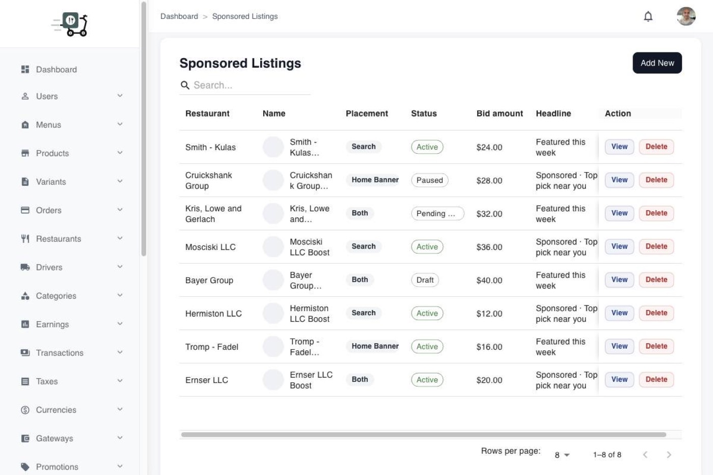

Sponsored listings
How operators oversee paid placement campaigns that restaurants create from their app.
Keep paid placement under control
Restaurants create and launch campaigns from the restaurant app. Admin Sponsored listings is the operator view: which campaigns exist, their state, and enough context to intervene if something should not stay live on the customer feed.
Use this screen together with the restaurant flow — partners self-serve the creative and bid; you keep marketplace hygiene.

Operator workflow
- Open Sponsored listings in admin.
- Review active and past campaigns (restaurant, placement, status).
- Open View when you need campaign detail or to take an admin action your build exposes.
- Cross-check the customer home / search experience and the restaurant sponsored form so creative and bid match what you expect.